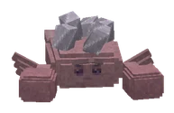

Zoutkreeft

How to beat itZo versla je hem
Zijn zoutkorst vangt klappen van voren. Van ACHTEREN is hij zacht: loop om hem heen!
LootBuit
1 roll(s), each 36% chance on gear; rarity rolled with luck 1.4.1 keer rollen, elke keer 36% kans op uitrusting; de zeldzaamheid met geluk 1.4. CoinsMunten: 110-200 bronzebrons.
Hidden by your spoiler setting.Verborgen door je spoilerinstelling.